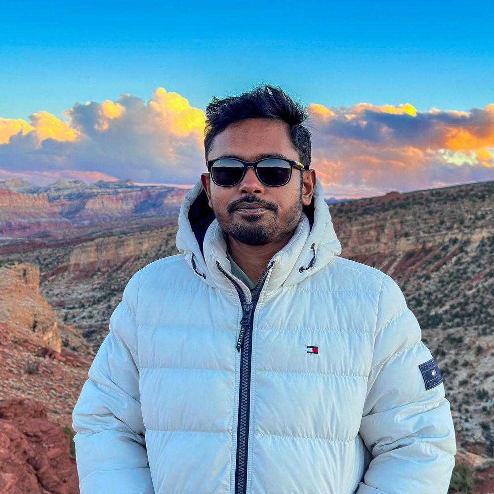

Beyond the lab
From the Bay of Bengal to the Pacific.
I grew up in Bangladesh, and outside the lab I love to explore new places with a new book in hand. I love meeting new people, learning their cultures, and exploring places I've only read about. Here are the journeys that stayed with me, and the books that sent me looking for them.

Travel
Stories from the road
Books
Books that shaped me
History and suspense have been my favourite companions since childhood, from Feluda and Byomkesh to the long story of the Indo-Pacific. As an AI researcher, I also love reading about the AI revolution and where it is taking us.
Map
Everywhere I've been
My pinned places on Google My Maps.